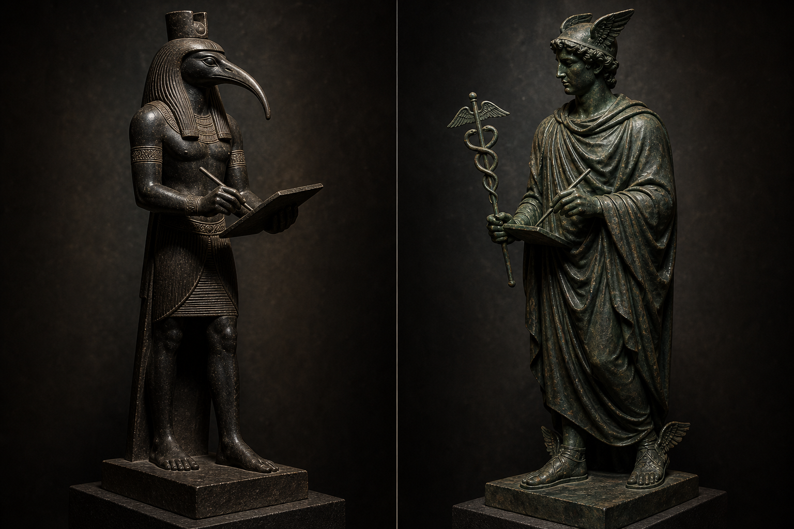

Thoth ⇄ Hermes
Par 01 / 12

Thoth · EgitoHermes · Grécia
Repare no que os dois seguram: a mesma tábua, o mesmo estilete. Thoth é o deus egípcio da escrita. Em Hermópolis, cidade construída em torno do antigo templo dele, os dois passaram a ser cultuados como uma divindade só. Dessa fusão nasceu Hermes Trismegisto e todo o corpus hermético, que o Ocidente passou séculos tratando como fundação do próprio pensamento esotérico. A fundação era egípcia.
FonteInterpretatio graeca no Egito ptolomaico; Hermópolis, antigo Templo de Thoth; origem do corpus hermético.